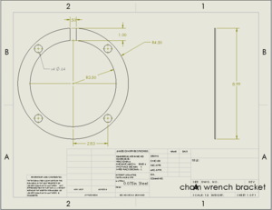
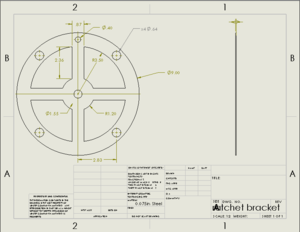
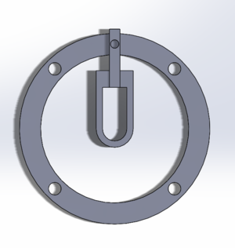
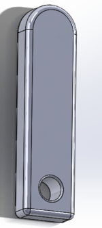
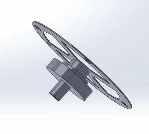
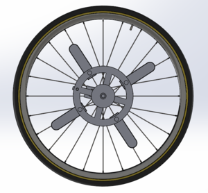
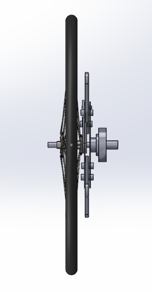
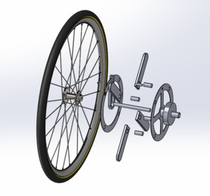
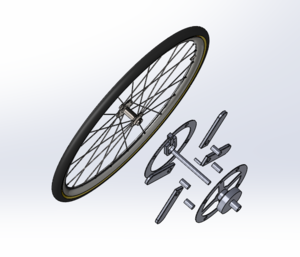

Rowing wheel chair
Abstract
For this project we aim to improve the design of the arm powered wheelchair from last semester. The family’s main concern was the ability of the wheelchair to go in reverse. We also may need to adjust the size of the chair to accommodate to growth of the child.
Team members
Silas Graves, Jeffrey Chasteen, Said Mohamed
Special Thanks to: Jeff Randoph, Chris Mills, Jacob Griffin, Justin Douglass.
Problem Statement/overview of the need
The chair from the previous semester needs some improvements to be functional for the family. Our task is to improve last semester’s group design, make the arm levers easy to power, make sure the wheelchair is capable of moving in reverse, and make sure the wheelchair will not break.
Design Specifications
1. The wheelchair needs to be comfortable and able to fit the user as he is growing in size. Possibly make the chair adjustable for size changes.
2. The wheelchair needs to move in reverse.
3. Ensure the levers that power the mechanism are easy to power for the user.
4. Improve the design so the wheelchair will last for the family.
Background research
We talked to Dr. Canfield and he explained to us that we should come up with a design and prototype and then show the family the prototype. We are using the previous two semester’s designs for ideas here: http://ttu-eime.csc.tntech.edu/index.php/Arm-powered_wheel_chair http://ttu-eime.csc.tntech.edu/index.php/Modified_Wheel_chair We visited a local bicycle shop to get information about different wheel hubs and their uses. We looked into how a socket wrench mechanism works for one of our designs. We also looked at designs of other manufactured rowing wheel chairs on the market.
Conceptual Design
Design Concept 1
- Description
This design will utilize gear teeth meshing and unmeshing. A handle will move the bottom side of the lever that has the gear on the bottom to mesh with an identical gear on the wheel hub.When the handle is released the gears unmesh and the wheels can rotate freely.
- Pros
1) Moving backwards independently. 2) Not too much machining involved. (Simplistic design)
- Cons
1) Getting the gears to mesh while the wheel is spinning. User would have to come to a stop to remesh gears to roll again.
Design Concept 2
- Description-
This design involves a socket wrench type of mechanism on the lever to wheel connection. The hub on the wheel will have a switch similar to a socket wrench with the ability to switch directions of rotation. This would allow the child to move both forward and backward, and the back-row will be easier on his arms so he doesn't get tired. We have also thought about installing a simple button that will run up through the arm to allow him to flip the switch on the socket whenever he needs to.
- Pros
1) Easy backward motion after finished rowing. 2) Ability to move both forward and backward independently. 3) Easily be able to turn 180 degrees if socket gears are rotating opposite directions.
- Cons
1) Might require a lot of machining. 2) The electronic button may add issues with: replacing batteries/short circuits/water damage/etc.
Design Concept 3
- Description
Design concept three would include two different hubs on each side of the wheel that can independently lock in either on the left or right side of the wheel. If locked in the left side the wheel would rotate forward when the lever is pushed. If locked in the right side of the wheel it would rotate backwards. There would be a slider that holds the "U" shaped lever that allows it to switch between locking into the left and right side of he wheel hub.
- Pros
1) Allow both forward and backward independent movement. 2) The option to move one arm forward and one arm in reverse for quick and precise turning.
- Cons
1) A somewhat complicated design with a lot of extra metal for the levers. 2) May be hard at first for the child to get used to having to push or pull the levers every time he wants to switch the wheel's direction.
Design Concept 4
Description- This is the design from the previous semester. It uses a special bicycle hub called a freecoaster to allow for forward driving motion as well as the ability to roll freely in either direction. This will allow the user to drive himself forward using the handles, while also giving him the option to be pushed or pulled in forward or reverse.
Freecoaster mechanism Pros 1) Allows for forward driving using the rowing motion. 2) Ability to disengage sprocket to roll freely in either direction. 3) Freecoaster mechanism is already built standard in each hub and will not require further modifications.
Cons 1) Does not allow user to move in reverse independently. 2) Wheels can only rotate in the same direction, not as much mobility to rotate on the spot. 3) Requires some dependence on previous group's design, without being familiar with the entire process.
Evaluate concepts/select candidate
Discuss winning candidate
Detailed Design
Description of selected design
Detailed description of selected design
Our current design makes use of certain aspects of the designs of previous semesters. We have decided to use a combination of the ratcheting mechanism and the wheel with a freecoaster bmx hub. The ratcheting mechanism allows the user to move the wheelchair with a rowing motion, but the chair wouldn't be able to roll backwards without bringing the handles with it. The freecoaster hub accounts for this by allowing the wheel to roll backward without engaging the sprocket that drives the wheel forward. This combination should solve the problem of the wheelchair rolling into areas and not being able to roll in reverse.The ratchet mechanism will be on the same axle as the wheel to provide the most torque, and reduce the amount of force needed to drive the wheels forward.
Analysis
Engineering analysis 1
We found the distance he would travel given a 45 degree angle of rotation.
Engineering analysis 2
We found the force it would take for the person to start moving from rest and keep moving at a constant velocity.
Engineering analysis 3
We calculated the shear stress in the smallest bolt we have.
CAD Drawings
        
Bill of Materials
Assembly Instructions
Fabrication Process
Testing and implementation
The plates that connected the hub of the wheel to the ratcheting mechanism were unbalanced due to more weight being on the side that the chain is attached to. We used extra nuts as a counterweight to fix this issue. We also adjusted the resistance of the back wheels to prevent the chair from spinning out of control. The chair is now able to operate as it was designed to.
Photos of Completed design
Instructions for safe use
This chair is meant for use on a flat surface in a controlled environment. The chair does not have brakes, so an adult should be nearby to supervise during use. The wheelchair must be stopped before disengaging the hub and rolling it backward. Keep hands and feet away from the metal plates while they are in motion. The chair is just under three feet in width, so be sure that there is enough clearance when operating the chair.
Project Summary, Reflection
This project provided a great amount of experience with engineering and design. We were able to adapt and improve upon the ideas from previous semesters in order to keep the best aspects of each design and meet the requirements. We learned a lot about what it is like to create a design and be able to adapt as new problems arise. We also learned about maintaining a schedule and preparing for mistakes in order to ensure that the project was completed on time. It was very rewarding to be able to make something that can improve someone's daily life and help him to have more mobility and control in the future.